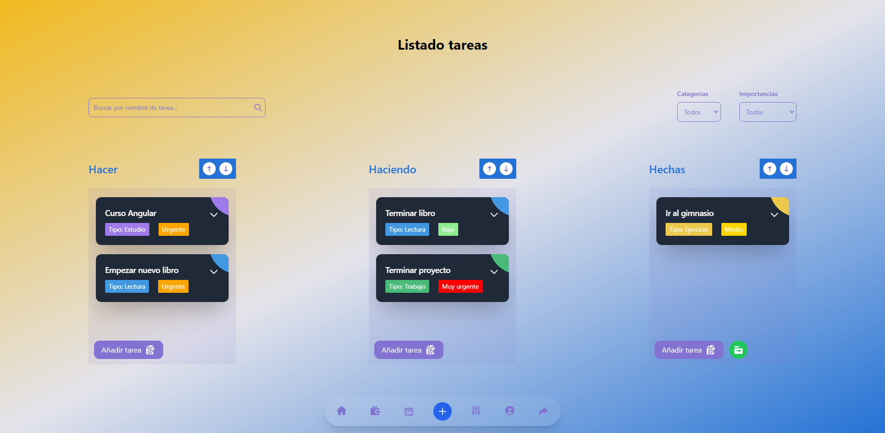

TodoApp.
Está inspirada en la versatilidad de Trello, ofrece una gama de funcionalidades clave para mejorar la gestión de proyectos. Incluye un sistema de inicio de sesión seguro, una interfaz intuitiva de arrastrar y soltar, capacidades CRUD para categorías y tareas, estadísticas detalladas para el seguimiento del progreso del proyecto, así como un calendario integrado para la planificación eficiente. Está combinación de características proporciona a los usuarios una experiencia completa y flexible para organizar, priorizar y realizar un seguimiento efectivo de sus proyectos y tareas.